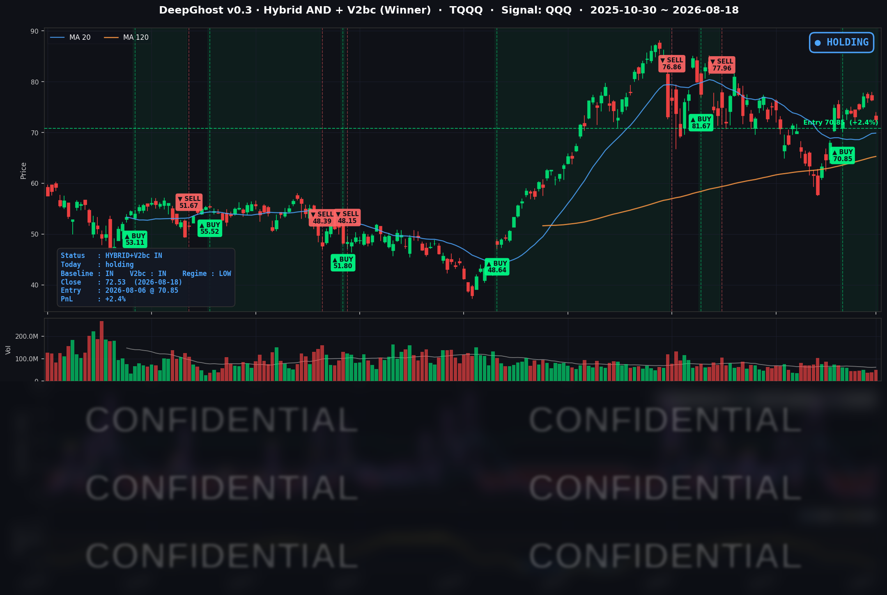

👻 매일 시그널과 히스토리를 홈페이지에서 한눈에 → www.ghostai.co.kr
메모리 -8%, 광통신 -8%가 무너지고 소프트웨어·헬스케어·에너지가 올랐습니다. 금리 불안으로 시장이 떨어졌으면 다른 섹터들도 다 무너졌어야 하지만 기술주만 하락했습니다. 금리 불안이 시장을 끌어내린게 아니라 차익 실현 및 변동성 확대로 보는게 맞겠습니다.
📊 오늘의 매매 신호
| 항목 | 내용 |
|---|---|
| 오늘 할 일 | ✅ 아무것도 안 해도 됩니다 |
| 포지션 상태 | 📈 TQQQ 보유 중 (IN POSITION) |
| 매수 진입일 | 2026-08-06 (9거래일째) |
| 진입가 → 현재가 | $70.85 → $72.53 |
| 현재 포지션 수익 | +2.4% |
TQQQ 시그널 — IN POSITION
현재 상태: 매수 포지션 유지 중 | 이번 포지션 수익률 +2.4%

전략의 TQQQ 트랙은 8월 6일 진입 이후 9거래일째 보유 상태입니다. 다만 평가수익은 하루 만에 +7.8% → +2.4%로 5.5%p가 사라졌습니다. 나스닥100이 -1.69% 빠졌고, 3배 레버리지가 이를 -5.07%로 증폭됐습니다. 지금은 오늘과 비슷한 하락이 한 번 더 나오면 신호가 바뀔 수 있는 구간에 들어와 있습니다.
오늘 미국 시장 — 시황 요약
지수 마감
| 지수 | 종가 | 등락률 |
|---|---|---|
| S&P 500 | 7,691.76 | -0.69% |
| 나스닥 종합 | 26,289.71 | -1.33% |
| 다우존스 | 53,343.40 | -0.22% |
| 러셀 2000 | 3,017.89 | -1.30% |
지수 숫자는 얕은 조정이지만 내부 편차가 훨씬 컸습니다. S&P 500 구성 종목 504개를 전수 집계하면 중간값 등락률은 -0.17%에 불과한데 평균은 -0.43%였습니다. 하락이 광범위했던 게 아니라 소수 종목이 극단적으로 빠진 것입니다. 하위 5% 컷오프가 -4.88%까지 벌어진 반면 상위 5%는 +2.48%였습니다.
나스닥100(QQQ, -1.69%)이 나스닥 종합보다 더 빠진 점도 눈여겨볼 만합니다. 나스닥100은 AI 하드웨어 비중이 구조적으로 높아 이번 매도의 한복판에 있었습니다. 그럼에도 -1.69%에서 멈춘 것은, 오늘 오른 소프트웨어와 애플·넷플릭스가 전부 같은 지수 안에 있었기 때문입니다. 지수가 스스로를 방어한 셈입니다.
국채 금리 동향
| 만기 | 수익률 | 전일 대비 |
|---|---|---|
| 3개월 | 3.705% | +0.2bp |
| 5년 | 4.367% | -0.9bp |
| 10년 | 4.706% | -1.8bp |
| 30년 | 5.285% | -2.4bp |
오늘 하락의 원인은 금리가 아닙니다. 일부 매체가 "화요일 장기 금리 급등이 성장주를 눌렀다"고 보도했지만, 실제 데이터는 반대입니다. 30년물 19년래 최고치(5.309%)는 어제(8/17) 기록이고, 이날은 오히려 2.4bp 내렸습니다. 만기가 길수록 더 많이 내리는 전형적인 리스크 회피형 흐름으로, 주식에서 빠진 자금 일부가 장기채로 이동한 모습입니다.
장단기 스프레드(10년 - 3개월)는 +100.1bp로 정상적인 우상향 곡선을 유지했습니다. 채권시장에서 침체 신호는 나오지 않았습니다. 다만 금리를 완전히 무시할 수는 없습니다. 30년물이 5.3% 부근에 머무는 것 자체가 먼 미래의 이익으로 평가받는 자산의 방어력을 구조적으로 깎아내리는 배경 압력이기 때문입니다. 정확한 서술은 "당일 금리 급등이 원인"이 아니라 "고금리가 깔린 상태에서 실적 트리거가 터졌다"입니다.
연준 발언 & 금리 패스
8월 18일에는 연준 인사의 공식 연설이 없었습니다. 8월 10-19일 구간에 예정된 연설 자체가 없어, 이날 하락을 연준으로 설명할 수 없습니다.
현 국면은 완화 사이클이 아니라 추가 인상 여부를 저울질하는 매파적 동결입니다. 7월 회의에서 정책금리를 3.50~3.75%로 5회 연속 동결했지만 위원 3인이 "지금 올려야 한다"며 반대표를 던졌습니다. 워시 의장은 첫 의회 증언에서 고인플레이션에 "관용 없다"고 했고, 근원 물가가 2% 목표에 닿는 시점을 2028년으로 보고 있습니다. 9월 회의(9/15~16)에 대한 시장 프라이싱은 동결 약 68% / 0.25%p 인상 약 32%입니다.
이번 주 최대 관문은 8/19(수) 오후 2시(미 동부시간, 한국시간 8/20 새벽 3시) 공개되는 7월 FOMC 의사록입니다. 세 명이 인하가 아니라 인상에 표를 던진 회의의 속기록입니다. 3개월물 금리가 3.705%에 고정돼 근시일 인하를 전혀 반영하지 않고 있어, 비둘기 서프라이즈의 여지는 거의 없고 위험은 매파 쪽으로 기울어 있습니다. 관전 포인트가 하나 더 있습니다. 오늘 지수를 지켜준 소프트웨어·저투자 대형주는 금리 충격에는 오히려 하드웨어보다 크게 맞습니다. 오늘의 방어 장치가 내일은 약점이 될 수 있는 구조입니다.
오늘의 핵심 이슈
- 파브리넷 쇼크 — 실적이 아니라 "감속"이 문제였습니다. 광통신 부품사 파브리넷은 분기 매출 +45%로 가이던스를 웃돌았고 연간 사상 최대 실적을 냈습니다. 그런데 다음 분기 가이던스가 +43%로 직전보다 소폭 감속하자 주가가 -20.25% 폭락했습니다. 실적 발표 전 이미 25% 급등해 눈높이가 극단적으로 높았던 탓입니다. 여파는 밸류체인 전체로 번져 코히런트 -12.75%, 루멘텀 -9.87%, 시에나 -8.90%, 코닝 -7.68%가 동반 붕괴했습니다.
- AI 투자의 "장부 밖 청구서" — 약 3조 달러. 월스트리트저널이 빅테크 9개사의 공시 각주를 분석해 약 3조 달러 규모의 부외 AI 관련 약정을 보도했습니다. 미개시 데이터센터 리스, GPU·서버 구매 약정 등이며, 이들 기업의 기존 리스와 장기차입금을 합친 금액의 약 3배입니다. 미개시 리스만 1.2조 달러로 1년 전의 약 4배입니다. "공시된 투자보다 실제 부담이 훨씬 크다"는 인식이 AI 인프라 전반의 리스크 프리미엄을 끌어올렸습니다.
- 메타 소송 리스크 — 빅테크 중 유일한 고유 악재. 29개 주 법무장관이 제기한 아동 안전 소송의 재판이 캘리포니아 연방법원에서 개시됐습니다. 여기에 2분기 투자비 311억 달러로 잉여현금흐름이 전년 대비 91% 급감한 부담이 겹치며 -4.45% 하락했습니다. 빅테크 플랫폼 그룹 평균이 -0.26%였던 점을 감안하면 명백히 개별 이슈입니다.
변동성 & 투자심리
- VIX (변동성 지수): 15.19 → 15.84 (+4.28%). 올랐지만 여전히 낮습니다. 2026년 평균 18.77, 연중 최고 31.05의 절반 수준이고 최근 10거래일 박스(14.25~15.84)의 상단일 뿐입니다.
- 공포탐욕지수: 59 (탐욕 구간). 직전 주 60~65에서 소폭 물러섰지만 여전히 탐욕 영역입니다.
- S&P 500은 사상 최고 대비 겨우 -1.37%입니다.
세 숫자를 합치면 결론은 분명합니다. 오늘은 조정이지 공포가 아닙니다. 진짜 시스템 리스크였다면 VIX가 20을 넘겼어야 합니다. 지수 레벨의 사건이 아니라 특정 테마 내부의 사건이었고, 시장 전체는 이를 위기로 받아들이지 않았습니다.
다만 경계할 지점은 있습니다. TQQQ는 6월 고점 대비 -16.8%, 메모리 업종은 최고가 대비 20% 넘게 밀려 이미 자체 약세장에 들어섰습니다. 나스닥 상승을 견인해온 엔진이 식고 있다는 사실은 지수가 조용하다고 넘길 문제가 아닙니다.
매크로 & 원자재
- 유가: WTI $84.50 (0.00%), Brent $91.38 (+0.56%)
- 금: $4,385.70 (-0.73%)
유가는 사실상 보합이었습니다. 오늘 급락은 에너지에서 온 게 아닙니다. 더 중요한 건 금이 내렸다는 점입니다. 통상적인 패닉이라면 금은 오릅니다. 금과 주식이 함께 내리고 채권만 소폭 강세를 보인 조합은, 시스템 위험이 아니라 특정 업종의 포지션 청산이라는 해석을 뒷받침합니다.
경제지표는 엇갈렸습니다. 7월 주택착공이 123.9만 건으로 예상(135.0만)을 크게 밑돌았고 단독주택 착공은 2022년 11월 이후 최저였습니다. 반면 제조업 생산지수는 4년여 만의 최고를 기록했고 견인 요인이 하이테크 장비와 산업·건설 자재였습니다. 같은 날 실물 지표는 "AI 투자가 제조업을 4년래 최고로 밀어올렸다"고 말했는데 주식시장은 "그 투자가 곧 꺾인다"에 베팅한 셈입니다.
주요 종목 동향
| 종목 | 종가 | 등락률 | 비고 |
|---|---|---|---|
| NFLX | 77.77 | +2.30% | 커버리지 최고 성과, AI 투자와 무관한 콘텐츠 방어주 |
| AAPL | 310.03 | +1.45% | 빅테크 중 AI 투자 노출 최저, 방어주 성격 부각 |
| MSFT | 481.63 | +0.27% | 소프트웨어 로테이션 수혜 |
| GOOGL | 344.20 | +0.06% | 보합 사수 |
| AMZN | 259.45 | -0.71% | 방어적 흐름 |
| TSLA | 336.87 | -0.72% | AI 하드웨어 테마와 무관하게 소폭 하락 |
| QCOM | 160.19 | -1.23% | 반도체 중 상대적 선방 |
| NVDA | 219.74 | -2.34% | 급락 주도주가 아님, 공급망(-8%대)보다 낙폭 작음. 8/26 실적 대기 |
| AVGO | 380.00 | -3.17% | AI 반도체 동반 조정 |
| META | 543.67 | -4.45% | 29개 주 아동 안전 재판 개시 + 투자비 부담 |
| INTC | 96.68 | -6.58% | 목표주가 하향, 200억 달러 증자 희석 부담, 섹터 매도 |
| MU | 940.76 | -7.02% | AI 투자 정점 우려 직격. 종목 고유 악재는 없음 |
업종별로는 메모리·스토리지 -8.16%, AI 광통신 -7.97%, 데이터센터 전력·냉각 -4.75%, 반도체 장비 -4.20%가 무너진 반면 소프트웨어 +0.73%, 필수소비재 +1.33%, 헬스케어 +1.82%, 에너지 +1.90%가 올랐습니다.
가장 중요한 신호는 소프트웨어가 올랐다는 사실입니다. 반도체가 -3~-8%로 무너지는 동안 인튜이트 +4.41%, 어도비 +3.58%, 세일즈포스 +2.70%가 상승했습니다. 이건 단순한 기술주 매도가 아닙니다. 시장이 표명한 논리는 "AI 하드웨어 지출은 정점일지 몰라도, 그 AI를 쓰는 소프트웨어의 실적은 이제부터"입니다. 커버리지 안에서도 같은 축이 확인됩니다. 최고(NFLX +2.30%)와 최저(MU -7.02%)의 격차가 9.32%p였고, 그 순위를 거의 완전히 결정한 변수는 AI 투자 노출도였습니다.
앞으로의 분수령은 8월 26일 장 마감 후 엔비디아 실적입니다. 오늘의 하락이 "감속 우려"였으므로, 가이던스가 이를 반박하면 과매도 되돌림이, 확인해주면 추세적 조정이 이어질 가능성이 큽니다.
Ghost.AI — Quantitative AI Investment
Model: DeepGhost v0.3 | Transformer-Based Deep Learning
Coverage: 13 tickers | Updated every trading day after US market close
⚠️ 본 자료는 정보 제공 목적으로만 작성되었으며 투자 권유가 아닙니다. 모든 투자의 책임은 투자자 본인에게 있습니다. 과거 성과가 미래 수익을 보장하지 않습니다.
[유의사항]
- 본 서비스는 불특정 다수를 대상으로 발행되는 단방향 정보 제공 서비스이며, 투자자 개인의 재산 상황·투자 목적·위험 선호도를 반영한 개별 투자 조언이 아닙니다.
- 고스트에이아이 주식회사는 고객과 쌍방향 의사소통(개별 상담, 맞춤형 자문 등)을 제공하지 않습니다.
- 본 콘텐츠는 투자 권유 또는 매매 주문의 청약·청약의 권유에 해당하지 않으며, 최종 투자 판단 및 그에 따른 손익의 책임은 전적으로 투자자 본인에게 있습니다.
고스트에이아이 주식회사